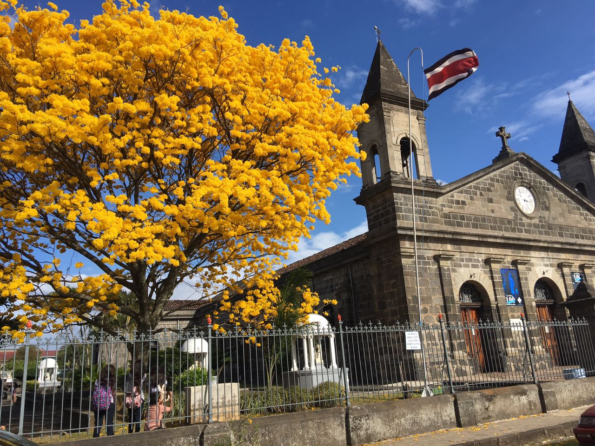

Heredia
Heredia es una provincia de Costa Rica, localizada en la parte norte-central del país. Al norte limita con Nicaragua, al este con la provincia de Limón, al sur con la provincia de San José y al oeste con la provincia de Alajuela. Por su extensión territorial, Heredia es la provincia más pequeña de Costa Rica, representando el 5,20% del territorio nacional. Se encuentra dividida a su vez en 10 cantones.
 Volver